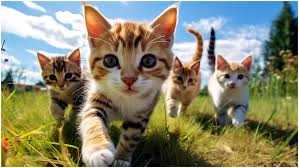

Comportamentul pisicii

Deși par drăguțe și pufoase, încă de la naștere pisica ta este menită să fie un vânător excelent – ele pot urmări și prinde prada cu ușurință și sunt capabile să se concentreze 100% pe ținta lor. Dacă pisica ta se concentrează pe un obiect mic, în mișcare, sau pe ceva nou în zona din imediata apropiere, vei observa că limbajul trupului lor se va schimba, pe măsură ce încearcă să descopere cum este cel mai bine să răspundă.
Semne de comportament concentrat al pisicii
Ochii lor vor fi deschiși, cu pupilele îngustate.
Urechile și mustățile vor fi îndreptate spre înainte, cu corpul arcuit către punctul de concentrare care le prezintă interes.
Corpul lor poate fi întins pe sol, în timp ce urmăresc, cu picioarele din spate strânse sub corp.
Limbajul cozii pisicii tale va arăta concentrare, dacă este ținută jos, în spatele pisicii. Vârful cozii și partea din spate a corpului ar putea să se balanseze, pe măsură ce pisicile sunt gata să sară.
Dacă obiectul concentrării lor ești tu, de exemplu, dacă încearcă să obțină mâncare sau mângâieri, s-ar putea freca de tine cu coada ținută în aer.
Inteligenta pisicii
Studiile arată că pisicile posedă permanența obiectuală – ele înțeleg că un obiect ascuns vederii încă există. În plus, ele au atât memorie de lucru, cât și pe termen lung, ceea ce le permite să își atingă obiectivele chiar și atunci când se confruntă cu obstacole. De asemenea, pisicile pot distinge între intervale de timp și cantități și sunt capabile să recunoască vocile umane, să reacționeze la stări de spirit și să folosească indicii umane pentru a rezolva probleme.
În timp ce unii oameni compară inteligența unei pisici cu cea a unui copil mic, pisicile diferă de câini prin abordarea lor în rezolvarea problemelor. Câinii tind să caute îndrumarea omului, în timp ce pisicile sunt mai independente și încearcă adesea să rezolve problemele pe cont propriu. Ambele comportamente demonstrează inteligență, dar în forme diferite.